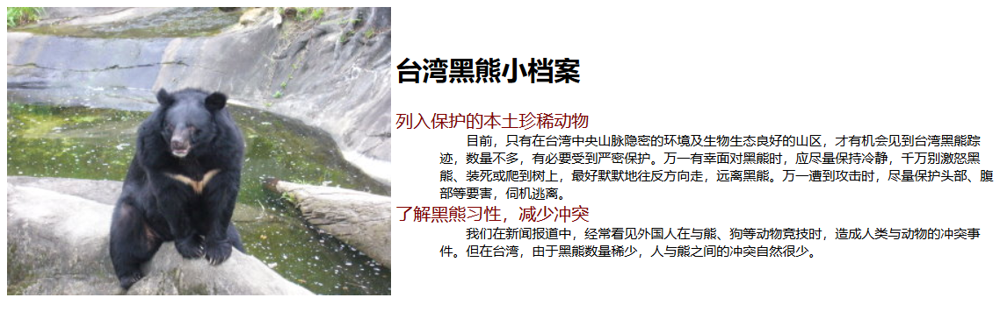
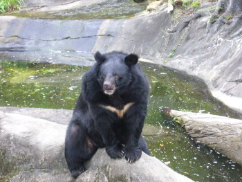

请写出上图的效果的样式

台湾黑熊小档案
列入保护的本土珍稀动物
目前，只有在台湾中央山脉隐密的环境及生物生态良好的山区，才有机会见到台湾黑熊踪迹，数量不多，有必要受到严密保护。万一有幸面对黑熊时，应尽量保持冷静，千万别激怒黑熊、装死或爬到树上，最好默默地往反方向走，远离黑熊。万一遭到攻击时，尽量保护头部、腹部等要害，伺机逃离。
了解黑熊习性，减少冲突
我们在新闻报道中，经常看见外国人在与熊、狗等动物竞技时，造成人类与动物的冲突事件。但在台湾，由于黑熊数量稀少，人与熊之间的冲突自然很少。